Research report · 2026-10-14
What we learned from giving an autonomous coding pipeline 63 tickets
We wanted to find out how much a ticket-to-PR pipeline could handle on its own while building a small project. Could it recover from failures, improve its workflow and tune itself as it went? We opened 63 GitHub issues with gh issue create and gave OpenPearl room to work. Fifty tickets described a new product named pearl-engine, a zero-dependency Node.js library that retries, heals, learns and tunes itself. The rest covered pipeline fixes, re-filed failures and a chaos drill. We learned a lot along the way, including where the pipeline surprised us and where it still appreciated a helping hand.
The short version
The encouraging part is that the engine did well in simulation, and the pipeline became dependable at recovery once we showed it what to do. All 50 engine deliverables reached main, although we had to re-file 4 of them. The pipeline also merged 8 fixes to its own gates and workflows. A person still had to notice and request each new kind of fix, while its only autonomous trigger handled red tests on main. The five challenge tickets helped us see that balance more clearly: the pipeline resolved simultaneous edits, made a reasonable guess on an ambiguous request, left a test-first requirement unverifiable, and returned honest diagnostics when a task could not succeed as written.
| Goal | Pipeline (the factory) | Engine (the product) |
|---|---|---|
| Self-healing | 17/17 merge conflicts resolved automatically. 22/34 incidents recovered with no human (65%); excluding conflicts 5/17 (29%). Red-main MTTR: 66 and 95 min by hand vs 106 s automatic. | In simulation, success at 30% injected faults rises 71.5% → 99.2%; at 60%, 41.1% → 87.9%. |
| Self-improving | It implements requested fixes (8 of 8 merged, merge-failure rate 4/24 → 0/31), but only the watchdog can currently open a repair ticket on its own. | Thompson-sampling selection cuts regret 200 → 12.1 (94%) and picks the best arm 95% of the time. |
| Self-optimizing | Mean run time rose from 190 s (first 25) to 234 s (last 25). No pipeline setting tuned itself. | Adaptive timeout: 493 → 27 false timeouts; tuner beats random search 31.0x at 160 evals; adaptive cache TTL gains only 1.8 pt hit rate. |
The engine's scorecard() rated healing at 95, improving at 95.9, optimizing at 67.5 and the overall result at 87 / 100. We mapped the measurements to the scorecard inputs ourselves, so these numbers are best used as a friendly way to compare the three areas, not as external grades.
fail yet mergedWe were happy to see 59 of 63 PRs land. We also noticed that 37 of 62 PRs merged while the test gate reported fail. The pipeline kept moving, but our main quality signal was no longer helping us tell a healthy PR from a troubled one. That became an especially useful lesson from the run.
How we set up the experiment
Here is the setup for anyone who would like to follow the path we took or try a similar run.
- Target:
research/engine, ESM, no dependencies, tests withnode:test, every module small and deterministic (injected clock and RNG). - 50 tickets in 6 phases: 10 core, 10 self-healing, 10 self-improving, 10 self-optimizing, 5 measurement, 5 challenge tickets (an ambiguous request, a seeded bug, two simultaneous edits of the same file and a request that could not succeed as written).
- Dispatch: issues were opened in waves (3 at a time, then 2 after the rate-limit incident). A wave never contained a ticket that depends on another in the same wave, except the deliberate conflicting pair E48/E49.
- Pipeline under test: unmodified
issue-to-pr.ymlwith Claude Code on Bedrock, 2 review rounds,AUTO_MERGE=1(eval and guards skipped). - Metrics:
research/harness/collect.pyreads runs, issues, PRs and comments throughgh.engine_eval.mjsmeasures the product.charts.pyandreport.pyproduce this page.
The pipeline kept moving steadily
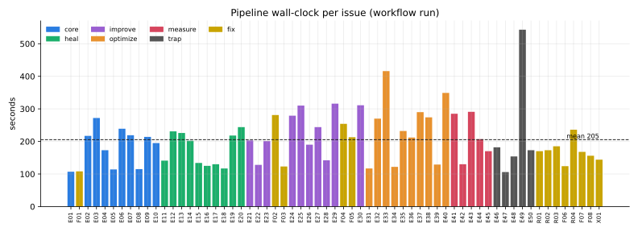
Each bar follows a ticket from dispatch to the end of its workflow. The fastest run took 106 seconds, and the median took 201. The longest run also had a clear story behind it: E49 edited the same file as E48 and then took extra time to reconcile the two changes. E33 (416 seconds) and E40 (349 seconds) were the next slowest.
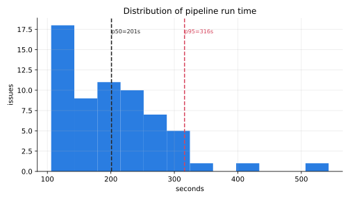
Most runs were fairly predictable. Nineteen finished in under 150 seconds, and 38 took 150 to 300 seconds. Only 6 crossed five minutes. That kept the mean (205 seconds) close to the median (201), despite a p95 of 316 seconds.
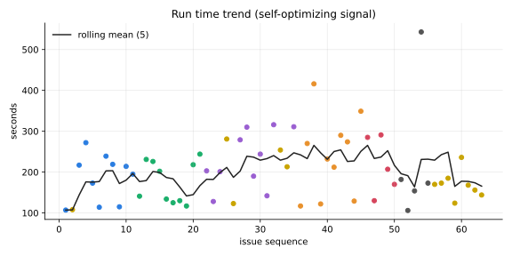
The pipeline did slow down as the experiment continued. Mean run time rose from 190 seconds for the first 25 experiment tickets to 234 seconds for the last 25, a 23% increase. The growing codebase may explain some of that, although we did not isolate the cause. The pipeline did not adjust its settings in response, so self-optimizing remains an area to explore.
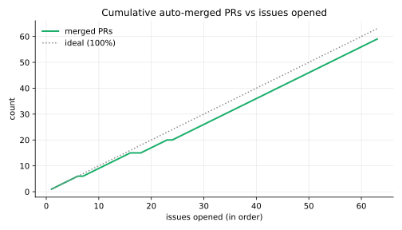
We opened the issues over 3.7 hours in waves of three, then two after the rate-limit incident. That kept the queue short enough for merges to follow dispatch closely. The line flattened when four runs died at step 1 over about 40 minutes and when four PRs lost merge races and had to be re-filed. Even with those stalls, 59 of 63 PRs merged, including 46 of 50 experiment PRs on their first attempt.
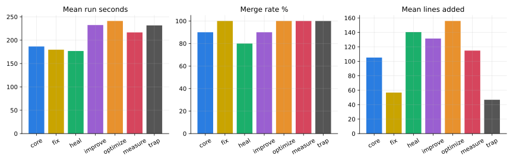
The optimize phase produced the largest PRs (156 added lines on average) and the slowest runs (241 seconds), while heal tickets averaged 140 lines and finished fastest at 177 seconds. The challenge tickets averaged only 47 lines and still took 232 seconds. Conflict handling, review and workflow retries mattered alongside diff size.
| Phase | Tickets | Merged | Mean run (s) | Mean lines added | Review rounds with findings |
|---|---|---|---|---|---|
| core | 10 | 9 | 186 | 105 | 9 |
| fix | 13 | 13 | 180 | 57 | 15 |
| heal | 10 | 8 | 177 | 140 | 5 |
| improve | 10 | 9 | 232 | 132 | 12 |
| optimize | 10 | 10 | 241 | 156 | 10 |
| measure | 5 | 5 | 217 | 115 | 4 |
| challenge | 5 | 5 | 232 | 47 | 4 |
The PRs that needed another attempt clustered in core (9/10 merged) and heal (8/10); optimize, measure and challenge all reached 100%. All 13 pipeline-fix tickets merged too. Those fixes were the smallest PRs on average, yet drew the most review findings (15). That makes sense in context: they touched workflow files, where even a small diff can shape every run that follows.
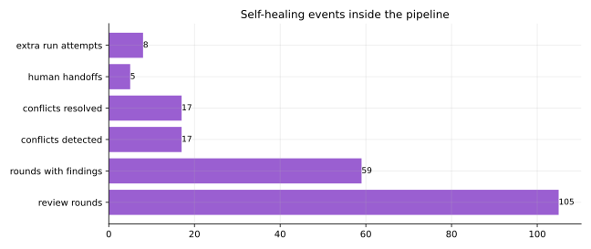
The pipeline resolved all 17 merge conflicts without help. After F02 added a merge-retry loop, all 3 later merge races recovered. After F07 added the watchdog, both later red-main events recovered. The incidents that still needed us happened before a recovery path existed: 4 early merge races, 4 runs interrupted by rate limits and a test gate that was either blind or already red.
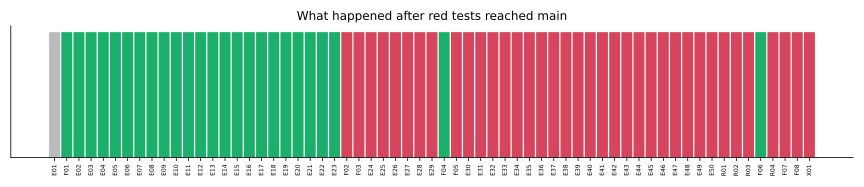
fail on 37 PRs, which all merged because AUTO_MERGE skips the guard. Red tests on main carried forward to later PRs.">AUTO_MERGE=1 skipped the guard.Each mark represents a PR in merge order. The opening none marks appear because there was no root test script until F01. Once a failing test reached main, every later PR inherited it and received fail, regardless of what that PR changed. F04 and F06 briefly restored green. This made the signal hard to use: a red mark did not necessarily mean its PR introduced a problem, and a gate that stayed red could not point us to the PR that did.
There was another gap in the test evidence. In 29 of 63 PR summaries, the agent says it did not run the tests. The gate was our only independent check, and it was unavailable until F01 and red for much of the run. We would want a stronger safety net before relying on this workflow for less forgiving work.
How the pipeline learned to recover
We saw a helpful pattern throughout the run: after a person spotted a new failure and filed a fix ticket, the pipeline handled later occurrences on its own. In that sense, each fix gave it a little more independence. The table separates the fixes we got to exercise from F05 and F08, whose target failures never returned.
| Id | What we noticed | What we asked for | What happened next | Requested by |
|---|---|---|---|---|
| F01 | Test gate ran nothing: Tests: none for research PRs | Root package.json with scripts.test | Next PRs reported Tests: pass | operator |
| F02 | Merge race: base moved after the eval, gh pr merge failed; 4 of 24 early PRs needed a human | Bounded re-sync + conflict-resolve + retry loop around the merge | 3 merge retries fired, all 3 merged; failures 4/24 → 0/31 | operator |
| F03 | Engine npm test failed on Node 24 (my own spec bug) | Explicit test glob in package script | Merged; script passes | operator |
| F04 | AUTO_MERGE let red tests onto main | Fix two failing tests | Green for about 1 minute: E29 (a rerun finishing concurrently) made main red again, then E35 added another red test | operator |
| F05 | GitHub's secondary rate limit interrupted 4 runs at step 1 (~40 min) | gh_retry backoff helper for all comment calls | The situation did not return after the fix, so it is still to be verified under load | operator |
| F06 | Main red again (two more tests) | Fix two failing tests | Green: 380/380 | operator |
| F07 | Nothing watched main; 37 PRs gated fail | New main-watchdog.yml opens a main-red issue | Caught 2 of 2 red-main events with no human action after the merge; MTTR 7.5 min and 1.8 min | operator (the watchdog itself); detection and repair are automatic |
| F08 | Early-step failures were never retried | Retry workflow also reruns failures before the agent starts | The situation has not returned yet, so this is still to be verified | operator |
| R01-R04 | E06/E16/E17/E23 PRs waiting after a merge race | Re-filed the same tickets | 4 of 4 merged on the first retry | operator |
That pattern made the pipeline more reliable, but the improvement was supervised. The system implemented all 8 fixes; it did not decide which fixes to make.
| Incident class | Count | Recovered automatically |
|---|---|---|
| merge conflicts with main | 17 | 17 |
| merge race (before F02) | 4 | 0 |
| merge race (after F02) | 3 | 3 |
| runs interrupted by rate limits | 4 | 0 |
| red main (before F07) | 2 | 0 |
| red main (after F07) | 2 | 2 |
| test-gate blind spot | 1 | 0 |
| package test script issue | 1 | 0 |
| Total | 34 | 22 (65%) |
The pipeline recovered from 22 of 34 incidents on its own (65%), with familiar conflicts accounting for 17 of those 22 recoveries. Without conflicts, the rate was 5 of 17 (29%). We came away confident that the pipeline could follow recovery paths it knew, while unfamiliar failures still benefited from a person stepping in.
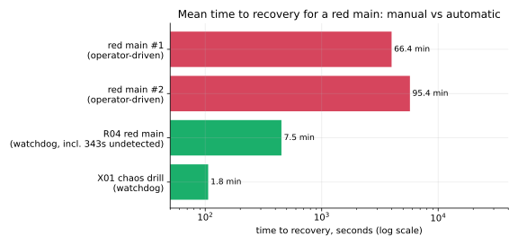
Most of the manual recovery time was spent waiting for someone to notice, not repairing the problem itself. The first watchdog event took 7.5 minutes, including 343 seconds that passed before the watchdog existed. In the chaos drill, detection took 13 seconds and the repair took 93. Giving the pipeline a way to notice the problem made the biggest difference.
Five tickets that invited a little more judgment
For the last five experiment tickets, we gave the pipeline a few less tidy situations: ambiguity, a seeded bug with a process requirement, simultaneous edits to the same function, and an impossible request. All five merged, and each gave us a different view of how the pipeline makes decisions.
| Ticket | Challenge | What the pipeline did | What we learned |
|---|---|---|---|
| E46 | Under-specified request: “Make the engine faster.” | Skipped adaptive-TTL history bookkeeping when adaptation is disabled, then added a 5,000-lookup behavior test. PR #241 added 33 lines across 2 files and finished in 182 seconds. | It chose a safe, local interpretation without asking what workload or performance target mattered. |
| E47 | Seeded backoff bug plus an instruction to write a failing test first. | Clamped positive jitter to an integer maxMs and added tests for positive jitter and fractional caps. PR #243 added 17 lines and finished in 106 seconds. | The final code fixes the bug, but the single commit does not establish a red-green sequence. The agent also said it had not run the tests. |
| E48 | First simultaneous edit to runner.js. | Added onGiveUp, called after exhausted retries or a permanent error, with tests ensuring callback failures do not change the task result. PR #246 merged first in 154 seconds. | The first half established the version of runner.js that its sibling would have to reconcile. |
| E49 | Second simultaneous edit to runner.js. | Added per-attempt timeoutMs handling and tests while preserving E48's onGiveUp callback. PR #247 detected and resolved the conflict automatically. | This was the clearest trap success: both independently requested features survived the merge. It was also the slowest run at 543 seconds. |
| E50 | A request to guarantee success even when the function always throws. | Kept the outcome honest and added structured diagnostics with the reason, attempt limit and classified error history. PR #249 added 58 lines across 2 files and finished in 173 seconds. | The pipeline returned the closest honest behavior allowed by the ticket. This shows careful compliance with the escape hatch more than independent refusal. |
E46 offers a useful lesson for everyday product work. The chosen optimization is reasonable: a non-adaptive cache does not need per-key hit and miss history. Still, “faster” could have meant task latency, throughput, memory use or startup time. The pipeline chose cache bookkeeping, and its new test checked behavior rather than measuring elapsed time. The patch was tidy, but a quick clarifying question would have helped it solve the right product problem.
E47 separates code correctness from process compliance. The final diff covers the seeded edge cases and fixes the cap, but the ticket also required a failing test first. With a single commit and an admission that tests were not run, the experiment cannot show that the pipeline followed the requested red-green sequence.
E48 and E49 gave us the clearest success in the set. Both tickets changed the same function at nearly the same time. E48 landed onGiveUp first; E49 then resolved the conflict, retained that callback and added timeout handling. E50 also produced a good result, with the prompt offering a path away from the request that could not be fulfilled literally. A useful next step would be helping the pipeline ask a question or invite a human in when a ticket leaves room for interpretation.
The engine gave us more encouraging results in simulation
By the end of the run, the engine had grown to 43 source files, 2,474 source lines and 3,585 test lines, with 392 passing tests. This is where the experiment began to feel especially promising.
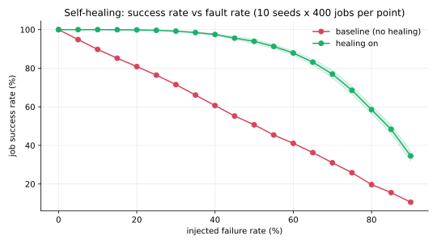
At 10 to 30% injected faults, healing lifts success to 99% or better. At 60%, it more than doubles success from 41.1% to 87.9%, the largest gain in the experiment. At 90% faults, only 34.5% of jobs succeed because repeated attempts keep hitting the same high failure probability. Variation across seeds also widens as faults rise.
| Injected fault rate | Baseline success | Healing success | Gain | Mean attempts | p95 latency (virtual ms) |
|---|---|---|---|---|---|
| 10% | 89.8% | 100.0% ±0.0 | +10.3 pt | 1.00 → 1.11 | 10 → 25 |
| 20% | 80.9% | 99.9% ±0.2 | +19.0 pt | 1.00 → 1.24 | 10 → 26 |
| 30% | 71.5% | 99.2% ±0.2 | +27.7 pt | 1.00 → 1.40 | 10 → 40 |
| 50% | 50.7% | 94.0% ±1.3 | +43.3 pt | 1.00 → 1.86 | 10 → 55 |
| 60% | 41.1% | 87.9% ±1.2 | +46.8 pt | 1.00 → 2.16 | 10 → 55 |
| 80% | 19.7% | 58.5% ±2.0 | +38.8 pt | 1.00 → 2.97 | 10 → 55 |
| 90% | 10.6% | 34.5% ±2.7 | +23.9 pt | 1.00 → 3.44 | 10 → 55 |
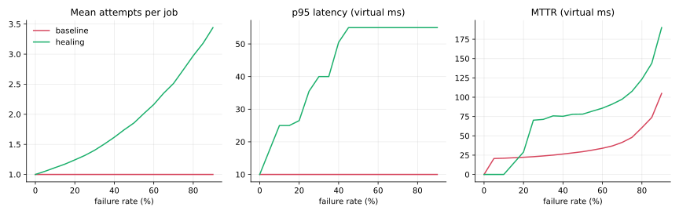
That extra reliability comes with a tradeoff. At 30% faults, mean attempts rise from 1.00 to 1.40 and p95 latency rises from 10 to 40 virtual milliseconds. By 60%, jobs average 2.16 attempts. Tail latency flattens at 55 because the retry budget caps it, not because the dependency has recovered. In production, we would pair those retries with care so they do not add too much load to a dependency that is already struggling.
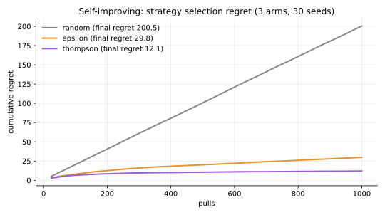
Regret measures the reward lost when the selector does not choose the best option. Random selection keeps making the same class of mistake, so its regret climbs roughly linearly. Thompson sampling learns faster: it cuts regret by 94% against random and chooses the best arm 95% of the time.
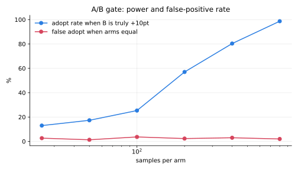
At 800 samples per arm, the gate detects a true 10-point lift 99% of the time and falsely adopts an equal arm 2% of the time. At 25 samples per arm, it detects the same lift only 13% of the time. For this pipeline experiment, that means 50 tickets do not provide enough observations to tune settings safely with this gate.
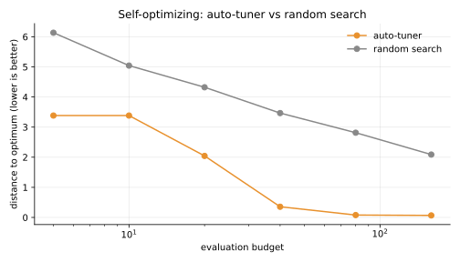
The tuner takes a little time to get going between 5 and 10 evaluations, then closes quickly on the optimum. Random search improves more slowly and remains farther away, even with four times the budget.
| Evaluation budget | Auto-tuner error | Random-search error |
|---|---|---|
| 5 | 3.38 | 6.13 |
| 10 | 3.38 | 5.04 |
| 20 | 2.04 | 4.32 |
| 40 | 0.36 | 3.47 |
| 80 | 0.08 | 2.81 |
| 160 | 0.07 | 2.09 |
At the smallest budget, the tuner is already about twice as close as random search (3.38 versus 6.13). At 160 evaluations it is 31 times closer. These are averages over 30 seeds on a synthetic three-parameter problem. They show that the algorithm works under these test conditions, but they do not tell us how much it would improve this pipeline.
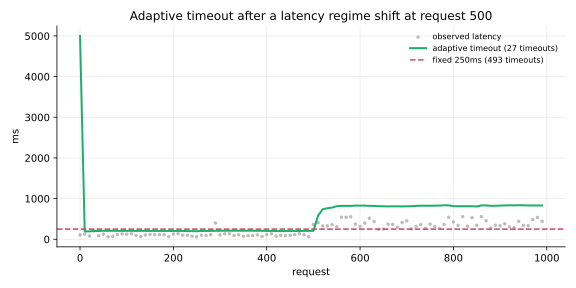
The fixed 250-millisecond threshold treats nearly every slower call after the shift as a timeout. The adaptive threshold follows the new distribution and settles at a mean of 513 milliseconds. That removes 466 false timeouts, but a dead call now takes about twice as long to declare. Adaptation trades faster failure detection for fewer false alarms.
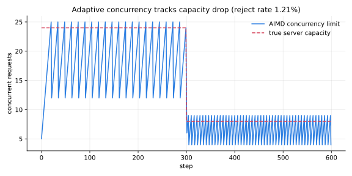
The limiter does not know the safe concurrency ahead of time. It increases until requests fail, then backs off. When simulated capacity drops from 24 to 8, concurrency follows it closely enough to keep rejection at 1.21% across the run. This is the behavior we expect from AIMD, so the result gives us confidence in the implementation under simulation rather than revealing a new algorithmic result.
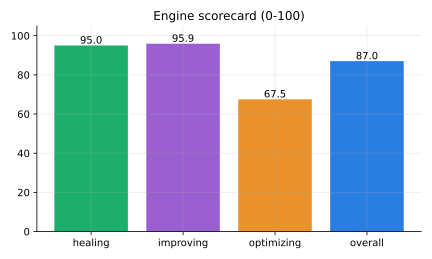
The overall score is 87, but it is not an external grade. We chose how each measurement maps into the engine's scorecard(). The chart helps compare the three areas under that mapping; it does not mean the engine is “87% self-improving” in a general sense.
Adaptive TTL raised the hit rate from 16.1% to 17.9% on a skewed 5,000-request workload.
scenarios.json lists 12 scenarios, but the simulator models only failure rate. The latency-spike and corruption scenarios therefore reproduce the plain fault-rate results, leaving 8 distinct outcomes. Ticket E44 asked for 12 scenarios, and the pipeline followed the request closely. A stronger check of the simulator's capabilities would have helped it notice that all 12 could not yet be represented.
What we took away from the run
Self-healing
The pipeline heals failures covered by existing rules: conflicts (17/17), merge races after F02 (3/3) and red tests on main after F07 (2/2). New kinds of failure still need a person to help establish the recovery path. The rate-limit incident needed 8 manual reruns, and the comment-chat agent cannot run git fetch/merge, so it could not rescue stale PRs. F05 and F08 target those situations but were never exercised afterward. For now, healing means a growing collection of hand-reviewed rules, and the run gave us a useful foundation to build on.
Self-improving
The pipeline implemented all 8 requested fixes, including four edits to its own workflow files. We still chose what to improve, but once asked, it handled the implementation well. Its autonomous improvement path is currently the watchdog, which turns a red npm test into a ticket. Connecting failed runs, slow runs and repeated review findings to the same loop would be a natural next step. The engine already has a module for that, issuedraft.js, waiting to be connected to the pipeline.
Self-optimizing
The pipeline did not change its own parameters during this run. Review rounds, diff limits, wave size and concurrency were fixed or hand-set, and we lowered the wave size after the rate-limit incident. Run time grew along with the repo. The good news is that the engine already contains tuners and adaptive components that performed as designed in simulation; the next challenge is giving the pipeline a safe way to use them.
A few things to keep in mind
We want to keep the results in perspective. This was a useful experiment, not a final verdict on what the pipeline can do.
- A single run with a single model and no repeats. Timings include GitHub queueing and the rate-limit incident; no confidence intervals for pipeline metrics.
- The same model family writes the code, reviews it and judges it, with
AUTO_MERGE=1bypassing the independent eval. Test pass rates here do not show that the code is correct. - The engine is evaluated in simulation with synthetic faults and virtual time; production behavior is untested.
- The scorecard maps measurements to its inputs by our own choice (for example A/B power stands in for regression coverage). Treat the 0-100 numbers as illustrative.
- Operator interventions are part of the data: 8 manual reruns, 5 rate-limit probe comments, 1 chat nudge, 1 PR-merge attempt that was blocked, and the choice of which findings became fix tickets.
- The incident ledger counts are our classification.
What we'd be excited to try next
If we run the experiment again, these are the changes we would start with.
- Pair
AUTO_MERGE=1with a test gate that blocks when the gate saysfail. In this run, 37 PRs merged red. - Keep F07 and extend the watchdog to failed workflow runs, so F05/F08-style incidents open tickets too.
- Serialize or queue merges, or keep shared registries such as
index.jsout of tickets: that file caused the original merge races. - Feed run metrics (duration, retries, findings per PR) back into settings such as review rounds and wave size, with an A/B gate like the engine's
compareArms. - Give the agent a way to ask about under-specified tickets before choosing an interpretation (E46).
Explore the data or reproduce the run
python3 -I research/harness/collect.py # gh API -> research/data/metrics.json|csv
node research/harness/engine_eval.mjs # engine measurements -> research/data/engine-eval.json
python3 -I research/harness/charts.py # docs/research/*.svg
python3 -I research/harness/report.py # this pageIf you'd like to explore the results or run the experiment yourself, start with metrics.csv, metrics.json and engine-eval.json. You are also welcome to browse the research code and experiment tools. If you spot something we missed, try a variation or have an idea for the next run, we'd genuinely love to hear about it.